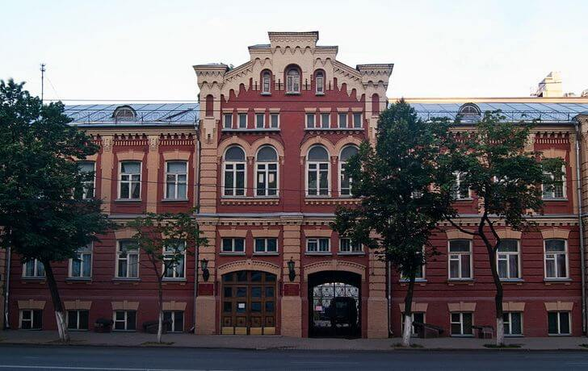

Музей имеет славу одной из ведущих экспозиций в городе. Здесь хранятся нумизматические, этнографические, филателистические, оружейные коллекции, а также собрания фарфора, керамики, редких книг и другие ценные экспонаты. Основное здание музея – это живописный городской особняк начала XX века с ярко-красным фасадом. Сооружение построено из кирпича в манере эклектики, разбавленной элементами русского стиля.
